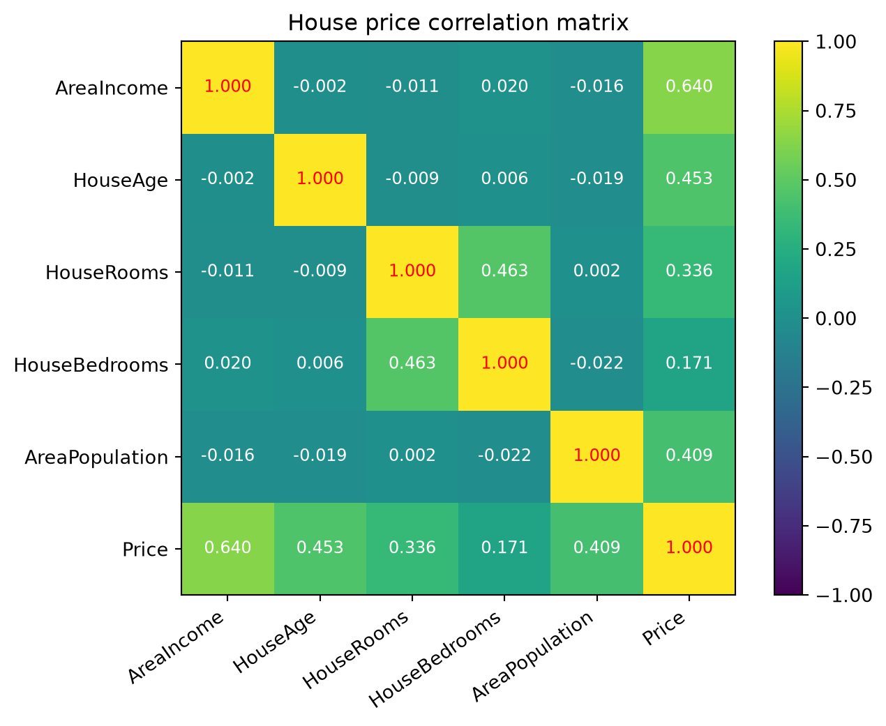
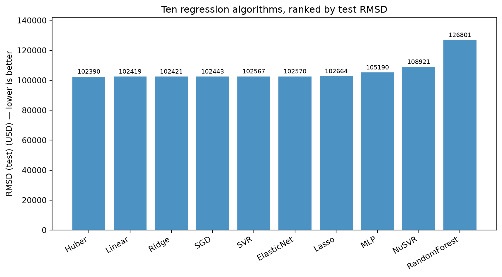
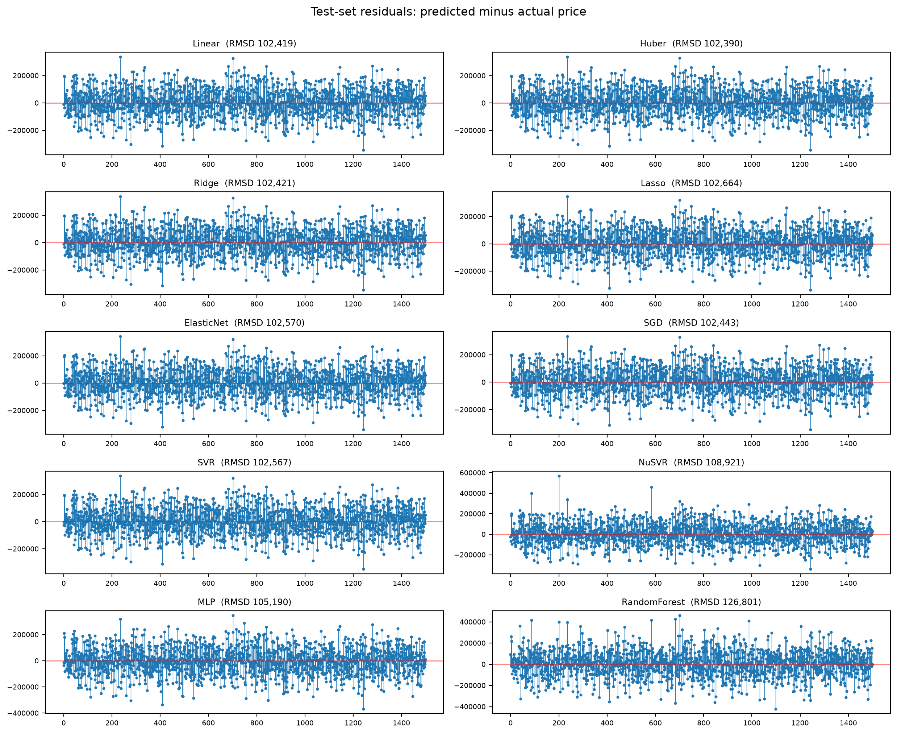
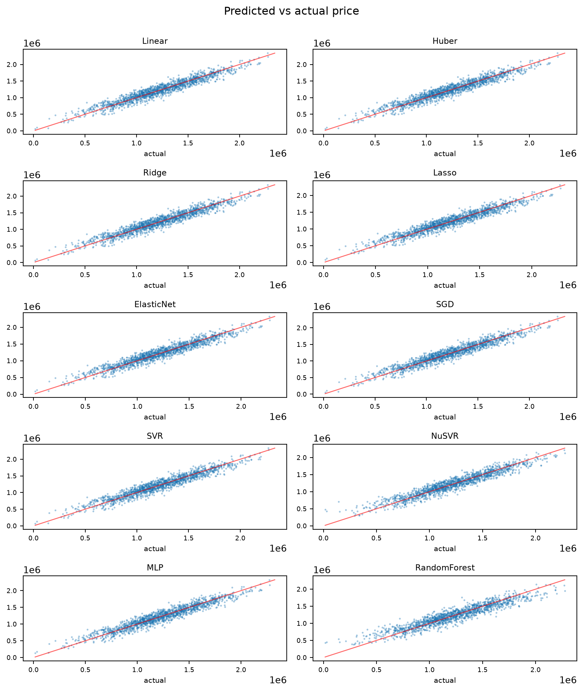
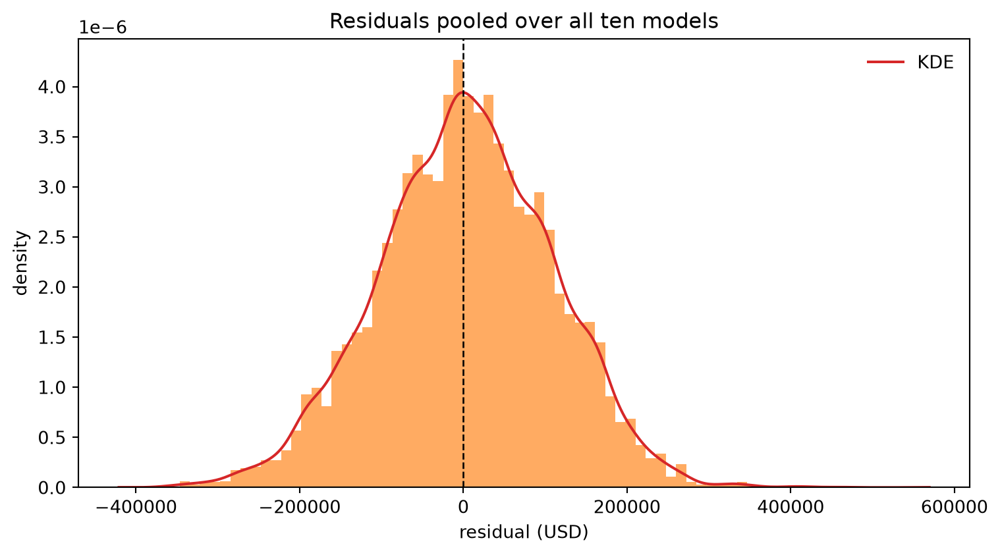
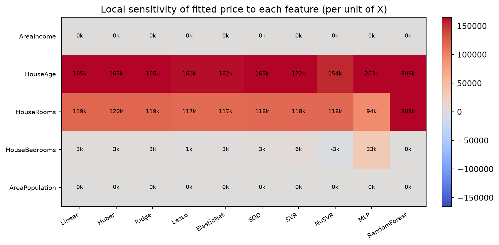
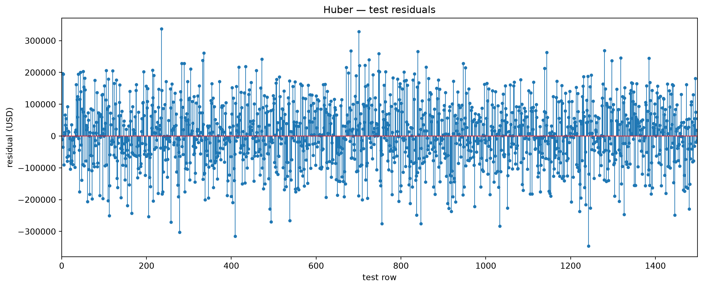
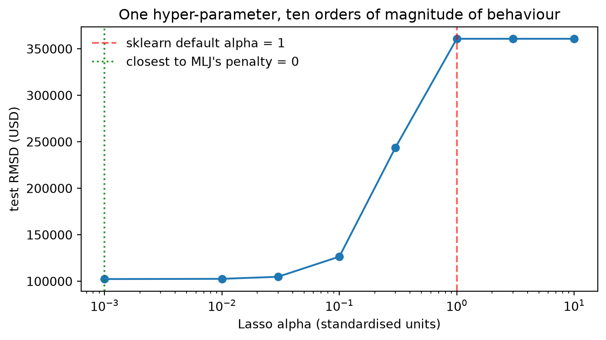

Practical Introduction to 10 Regression Algorithms
A Julia / MLJ project refactored to Python / scikit-learn
regression
scikit-learn
pandas
matplotlib
quarto
julia
Author
math4mads
Published
2026-09-05
1 Why this note exists
This is the Python sibling of a small Julia project that fitted ten regression algorithms to the USA housing dataset with MLJ.jl and drew the diagnostics with GLMakie. The whole point of the refactor is that each Julia script has exactly one Python counterpart, so the two versions can be read side by side.
Five area-level features (income, house age, rooms, bedrooms, population) predict Price. The loader performs the same steps as the Julia data_prepare pipeline: read the CSV, coerce every modelling column to a float (MLJ’s coerce(Count => Continuous)), drop missing rows, rename the columns, and drop the free-text Address.
Code
df = get_data()df.head(3)
AreaIncome
HouseAge
HouseRooms
HouseBedrooms
AreaPopulation
Price
0
79545.458574
5.682861
7.009188
4.09
23086.800503
1.059034e+06
1
79248.642455
6.002900
6.730821
3.09
40173.072174
1.505891e+06
2
61287.067179
5.865890
8.512727
5.13
36882.159400
1.058988e+06
Code
df.describe().T.round(3)
count
mean
std
min
25%
50%
75%
max
AreaIncome
5000.0
68583.109
10657.991
17796.631
61480.562
68804.286
75783.339
107701.748
HouseAge
5000.0
5.977
0.991
2.644
5.322
5.970
6.651
9.519
HouseRooms
5000.0
6.988
1.006
3.236
6.299
7.003
7.666
10.760
HouseBedrooms
5000.0
3.981
1.234
2.000
3.140
4.050
4.490
6.500
AreaPopulation
5000.0
36163.516
9925.650
172.611
29403.929
36199.407
42861.291
69621.713
Price
5000.0
1232072.654
353117.627
15938.658
997577.135
1232669.378
1471210.204
2469065.594
5000 rows, 6 columns, 0 missing values
4 Exploratory plots
cor-plot.jl built a GLMakie grid with density! on the diagonal and scatter! everywhere else; plots.pairs_plot is the matplotlib version of the same figure.
The Julia note computed (cor(Matrix(df))) .|> d -> round(d, digits=3) and drew it with heatmap! plus a text! in every cell:
Code
plots.cor_heatmap(df)

5 Train / test split
Code
X, y = unpack(df, TARGET)X_train, X_test, y_train, y_test = partition(X, y)print(f"train {X_train.shape[0]} rows | test {X_test.shape[0]} rows")X_test.head(3)
train 3500 rows | test 1500 rows
AreaIncome
HouseAge
HouseRooms
HouseBedrooms
AreaPopulation
2648
63824.394539
4.991750
5.003836
4.00
40086.458749
2456
67041.967661
6.021458
5.346830
3.39
15633.099048
4557
75571.044023
6.114928
7.318214
4.44
33988.435859
WarningOne Julia quirk deliberately not ported
Several Julia scripts used xtest = df[1:3:end, 1:5] – every third row of the whole frame – as the test set, while fitting on rows that include those very observations. The scores were therefore optimistic. The Python version always uses the honest 70/30 split (partition, seed 123). reg10.data_processing.every_third() keeps the old behaviour available if you want to reproduce the original numbers.
6 The ten algorithms
The Julia LinearMolesCollections() returned a Dict of MLJ model types; here model_collection() returns ModelSpec records that carry the scikit-learn estimator plus the Julia model it replaces, so the printed table can name both.
pd.DataFrame( [(s.key, s.label, s.julia_model, s.julia_pkg) for s in specs.values()]).to_string(index=False, header=["model", "description", "julia model", "julia package"])
' model description julia model julia package\n Linear Ordinary least squares LinearRegressor MLJLinearModels\n Huber Robust (Huber) regression RobustRegressor MLJLinearModels\n Ridge Ridge (L2) regression RidgeRegressor MLJLinearModels\n Lasso Lasso (L1) regression LassoRegressor MLJLinearModels\n ElasticNet Elastic Net (L1 + L2) ElasticNetRegressor MLJLinearModels\n SGD Linear regression fitted by SGD SGDRegressor MLJScikitLearnInterface\n SVR $\\epsilon$-SVR, polynomial kernel EpsilonSVR LIBSVM\n NuSVR $\\nu$-SVR, RBF kernel NuSVR LIBSVM\n MLP Feed-forward neural network NeuralNetworkRegressor MLJFlux\nRandomForest Random forest RandomForestRegressor DecisionTree'
6.1 Ranking by RMSD
StatsBase.rmsd(yhat, ytest) in Julia is sklearn.metrics.root_mean_squared_error here (also exposed as reg10.models.rmsd).
Code
table = comparison_table(fitted)table
model
description
julia model
julia pkg
family
RMSD (test)
RMSD (train)
fit (s)
0
Huber
Robust (Huber) regression
RobustRegressor
MLJLinearModels
robust linear
102389.798524
100558.553492
0.008917
1
Linear
Ordinary least squares
LinearRegressor
MLJLinearModels
linear
102418.935436
100553.054949
0.015477
2
Ridge
Ridge (L2) regression
RidgeRegressor
MLJLinearModels
penalised linear
102420.501804
100553.105729
0.004728
3
SGD
Linear regression fitted by SGD
SGDRegressor
MLJScikitLearnInterface
iterative linear
102442.694421
100559.723772
0.008151
4
SVR
$\epsilon$-SVR, polynomial kernel
EpsilonSVR
LIBSVM
kernel
102566.598573
100202.349510
0.970327
5
ElasticNet
Elastic Net (L1 + L2)
ElasticNetRegressor
MLJLinearModels
penalised linear
102570.016382
100693.413836
0.004496
6
Lasso
Lasso (L1) regression
LassoRegressor
MLJLinearModels
penalised linear
102663.623448
100829.131157
0.004225
7
MLP
Feed-forward neural network
NeuralNetworkRegressor
MLJFlux
neural
105190.172276
99900.739687
0.251210
8
NuSVR
$\nu$-SVR, RBF kernel
NuSVR
LIBSVM
kernel
108921.083837
98950.108369
0.342527
9
RandomForest
Random forest
RandomForestRegressor
DecisionTree
tree ensemble
126800.699623
83038.832591
0.546077
Code
plots.rmsd_barplot(table)

NoteRead the table honestly
All ten models see exactly the same five features, and the six linear variants collapse onto almost the same answer (RMSD ≈ 102.4k). The data were generated by a linear process with Gaussian noise – which this Kaggle set is – so nothing can beat least squares by much, and the interesting column is RMSD (train): RandomForest is 44k better in-sample than out-of-sample (over-fitting), while NuSVR and MLP pay for their flexibility in slightly worse test error.
6.2 Residuals and fitted values
The Julia plot_residue(yhat, ytest) drew a stem! of yhat .- ytest with a red hlines! at zero. Same picture, all ten at once:
Code
plots.residue_grid(fitted)

Code
plots.parity_grid(fitted)

Code
plots.residual_hist(np.concatenate([f.residuals for f in fitted]), bins=80, title="Residuals pooled over all ten models")

6.3 Coefficients
MLJ’s fitted_params(mach) gives the raw coefficients. Because every estimator here is wrapped in a standardising pipeline, FittedModel.coefficients() converts the slopes back into USD per raw unit of each feature, so the columns are directly comparable.
For the kernel, neural and forest models there is no global slope at all: the numbers below are central differences of the fitted predictor around the training mean (h = 1% of one feature sd). Read them as “how much did the prediction move when I nudged this feature”, not as a coefficient. The step size is a real limitation for piecewise-constant models – RandomForest reports 0 for HouseBedrooms (no split threshold of any of the 200 trees falls inside a ±0.003-bedroom window, even though the feature carries 0.8% of the forest’s importance) and an absurd 808k for HouseAge (a boundary does sit inside the window). The cell after the heatmap puts those two numbers next to what the forest actually says about its features.
Code
coefs = coefficient_table(fitted)coefs.round(1)
Linear
Huber
Ridge
Lasso
ElasticNet
SGD
SVR
NuSVR
MLP
RandomForest
AreaIncome
21.6
21.7
21.6
21.3
21.3
21.7
21.5
18.3
23.5
1.5
HouseAge
165201.1
165111.0
165151.2
161487.0
162485.4
165453.5
172299.1
153800.2
203498.5
808443.2
HouseRooms
119061.5
119528.3
119017.7
116607.0
117079.9
118487.3
118397.2
117919.8
93694.9
308463.4
HouseBedrooms
3212.6
2583.3
3228.0
1269.4
2509.9
3136.4
5609.3
-2800.7
33172.8
0.0
AreaPopulation
15.2
15.2
15.2
14.9
15.0
15.3
15.0
13.6
14.7
18.1
Code
plots.coefficient_heatmap(coefs)

Code
from sklearn.inspection import permutation_importancerf =next(f for f in fitted if f.key =="RandomForest")forest = rf.machine.regressor_.steps[-1][1]perm = permutation_importance( rf.machine, X_test, y_test, n_repeats=5, random_state=123, scoring="neg_root_mean_squared_error")comparison = pd.DataFrame( {"finite-difference slope (USD)": coefs["RandomForest"],"impurity importance": forest.feature_importances_,"permutation increase in RMSD": perm.importances_mean, }).sort_values("permutation increase in RMSD", ascending=False)comparison.round(4)
finite-difference slope (USD)
impurity importance
permutation increase in RMSD
AreaIncome
1.4556
0.4465
215727.3170
HouseAge
808443.1913
0.2325
127282.1343
AreaPopulation
18.0907
0.1911
107405.9511
HouseRooms
308463.4473
0.1224
74587.0331
HouseBedrooms
0.0000
0.0075
258.9153
7 One model in detail
Code
best =min(fitted, key=lambda f: f.rmsd_test)print(f"best test RMSD: {best.key} at {best.rmsd_test:,.0f} USD")best.params
print(f"fitted price at the training means : {best.prediction_at_mean:,.0f} USD")print("\nslope (USD per unit of feature):")print(best.coefficients().round(1).to_string())
fitted price at the training means : 1,235,007 USD
slope (USD per unit of feature):
AreaIncome 21.7
HouseAge 165111.0
HouseRooms 119528.3
HouseBedrooms 2583.3
AreaPopulation 15.2
Code
plots.residue_plot(best.residuals, title=f"{best.key} — test residuals")

Code
plots.predicted_vs_actual(best.y_true, best.y_pred, title=f"{best.key} — predicted vs actual")
The Julia models came from MLJLinearModels, whose penalty hyper-parameter defaults to 0, i.e. the un-regularised least-squares fit. scikit-learn’s defaults are not zero (alpha=1.0), which is one of the two reasons a naive port produces different numbers. This sweep makes the effect visible – and shows why alpha has to be read together with the standardised units the pipeline fits in:
import matplotlib.pyplot as pltfig, ax = plt.subplots(figsize=(7, 4))ax.plot(penalty["alpha"], penalty["test RMSD"], marker="o", color="tab:blue")ax.axvline(1.0, color="red", ls="--", alpha=0.6, label="sklearn default alpha = 1")ax.axvline(0.001, color="green", ls=":", alpha=0.8, label="closest to MLJ's penalty = 0")ax.set_xscale("log")ax.set_xlabel("Lasso alpha (standardised units)")ax.set_ylabel("test RMSD (USD)")ax.legend(frameon=False)ax.set_title("One hyper-parameter, ten orders of magnitude of behaviour")fig.tight_layout()

9 Cross-validated comparison
The Julia neural-network script finished with evaluate!(mach, resampling=CV(nfolds=5), measure=l2). cross_validate is the equivalent, run here over the whole registry (three folds to keep the notebook quick to re-render):
Code
cv_rows = []for key, spec in specs.items(): scores = cross_validate( spec.clone(), X, y, cv=3, scoring="neg_root_mean_squared_error", n_jobs=1 ) rmse_folds =-scores["test_score"] # this scorer returns negative RMSE, not negative MSE cv_rows.append( {"model": key,"cv RMSD (mean)": rmse_folds.mean(),"cv RMSD (sd)": rmse_folds.std(ddof=1),"mean fit (s)": scores["fit_time"].mean(), } )cv_table = pd.DataFrame(cv_rows).sort_values("cv RMSD (mean)")cv_table.round(3)
ImportantFive places the Python version is deliberately different
Scaling. MLJLinearModels tolerates raw dollar-scale features; SGDRegressor, SVR, NuSVR and MLPRegressor do not. Every estimator is wrapped in TransformedTargetRegressor(make_pipeline(StandardScaler(), model), transformer=StandardScaler()): features standardised by the pipeline, target standardised by the meta-estimator – the exact analogue of the Standardizer |> TransformedTargetModel(model, target=Standardizer) chain the Julia neural-network script used, applied to all ten models. LinearRegression and the forest are numerically unchanged by it; NuSVR improves from an RMSD of about 349k on the raw dollar target to about 109k. Worth stating plainly: TransformedTargetRegressor defaults to the identity on y, so the transformer=StandardScaler() argument is what does the work, and forgetting it is the easiest way to break this port.
Penalty defaults. MLJLinearModels defaults to penalty = 0 (plain least squares); scikit-learn defaults to alpha = 1.0, which is severe once the target is standardised – it shrinks Lasso to an almost constant fit (test RMSD 361k). The registry therefore uses alpha = 0.01 for Lasso and ElasticNet to sit in the same regime as the Julia defaults; the alpha sweep above shows the whole curve.
Support-vector defaults. With the target standardised, LIBSVM-style C = 1 is reasonable, so SVR keeps the Julia polynomial kernel (degree=3, coef0=1) at C = 1 and NuSVR keeps nu = 0.5, C = 1, gamma="scale". Raising C buys nothing here and costs a factor of thirty in fit time.
The split. Julia’s partition((X, y), 0.7, multi=true) and the df[1:3:end, ...] test frames are replaced by one seeded train_test_split(train_size=0.7, random_state=123).
Names. MLJ’s RobustRegressor is Huber regression, so its counterpart is HuberRegressor; NeuralNetworkRegressor (MLJFlux, builder Chain(Dense(n_in,64,relu), Dense(64,32,relu), Dense(32,n_out))) becomes MLPRegressor(hidden_layer_sizes=(64, 32), activation="relu"), where Flux’s epochs=20 becomes max_iter=500 with early_stopping=True because scikit-learn counts full-batch epochs rather than mini-batch steps. The column HouseBedromms is spelled correctly as HouseBedrooms here.
cross_validate(model, X, y, cv=5, scoring="neg_root_mean_squared_error")
StatsBase.rmsd(yhat, y)
sklearn.metrics.root_mean_squared_error(y, yhat)
Figure(resolution=(1200,500)), stem!, heatmap!
plt.subplots(figsize=(12,5)), ax.stem, ax.imshow
NoteTwo scikit-learn naming traps
sklearn.metrics.neg_root_mean_squared_error no longer exists as a function in scikit-learn 1.9 (importing it raises). Use root_mean_squared_error(y_true, y_pred) directly, as reg10.models.rmsd does.
The string scorer "neg_root_mean_squared_error" still works in cross_validate / GridSearchCV, and it returns negative RMSE, not negative MSE. Taking np.sqrt(-score) – the reflex for the old "neg_mean_squared_error" – is wrong here and would report ~317 instead of ~102,400.
11 Running the code yourself
python3-m venv .venv &&source .venv/bin/activatepip install -r requirements.txtpython scripts/pair_plot.py # figures/us-housing-cor.pngpython scripts/lasso_regressor.py # one algorithm, like lasso-regressor.jlpython scripts/compare_algorithms.py # the whole table, like 10-algorithm-compare.jlpython-m reg10.models # smoke test of the package itselfmake render # quarto render (uses the project venv kernel)make publish # quarto publish to gh-pages
On macOS/Linux, make exports JUPYTER_PATH so that Quarto picks the python3 kernel from .venv instead of a stale user-level kernelspec – a failure mode worth knowing about if quarto render complains about a missing Python path.